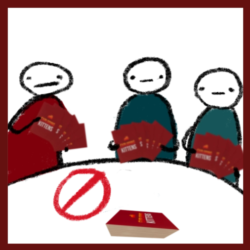
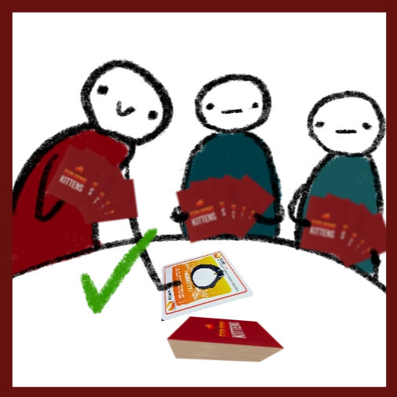

Setting Up
1. Remove Cards
Remove and set aside all 9 Exploding Kittens cards from the deck. Make sure to not get these mixed up with other cards!
2. Remove More Cards
Remove all the Defuse cards from the deck. Give each player 1 Defuse card and shuffle the rest back into the deck.
3. Deal Cards
After thoroughly shuffling the deck, deal each player 7 cards. This is in addition to the 1 Defuse card each player recieved in step 2.
4. Add the explosions
Calculate the number of exploding kittens to be added to the deck; there should be 1 less than the number of players. For example, if there are 5 players, 4 exploding kittens are placed back into the deck. Shuffle thoroughly (again). This means that when the bottom of the draw pile has been reached, 1 player will remain.
5. You're all set!
You're all ready to play! Place the deck (now the 'draw pile') into the centre of the table, and choose a player to begin.
Taking your turn
On your turn, assess your hand, the size of the draw pile and the cards that have been played (for more details on how to do this, check out the tips and tricks page!). Then, choose to either:
PASS
Do not play any cards. You may do this if you are under attack, given you end your move by drawing a card.
Do not play any cards. You may do this if you are under attack, given you end your move by drawing a card.
PLAY
Play as many cards as you wish, placing each face up on the discard pile after use and following the instructions on the card.
======= Play as many cards as you wish, placing each face up on the discard pile after use and following the instructions on the card.
Following this, you MUST finish your turn:
DRAW
Draw a card from the draw pile, ending 1 turn... and hope it isn't an Exploding Kitten. If you are playing after an attack card was played, you must repeat the sequence of PASS/PLAY then DRAW.
Draw a card from the draw pile, ending 1 turn... and hope it isn't an Exploding Kitten. If you are playing after an attack card was played, you must repeat the sequence of PASS/PLAY then DRAW.
If you do happen to draw an exploding kitten, you must reveal it immediately. Then:
Exploding Kitten!
Don't panic! If you have a defuse card, play this and place it in the discard pile to avoid exploding. Then, take the Exploding Kitten card you just drew, and secretely place it ANYWHERE back in the draw pile. You can count cards, place it randomly or even put it on top. Make sure you don't reorder or view any other cards, and hide the location from other players. Your turn is now over.
You're all set!
Congratulations! You're now ready to play Exploding Kittens. Don't forget to refer to the cards and our curated list of tips and tricks to learn more about how to play!